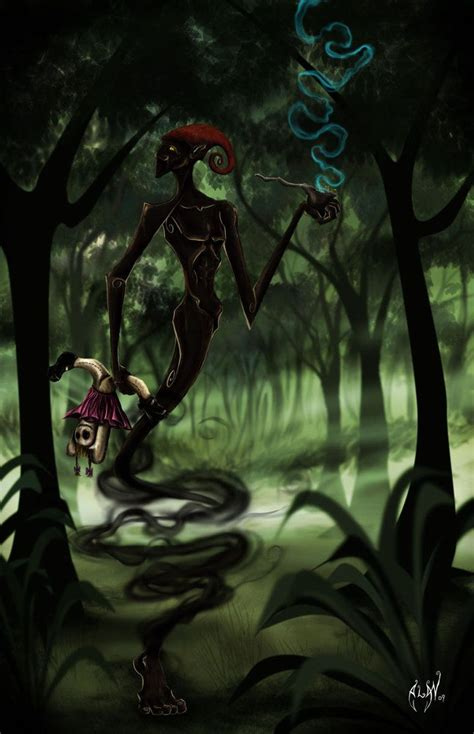

The saci is one of the most well-known Brazilian legends – it even has its own national holiday. October 31 is Dia do Saci, or Saci Day, established to direct attention away from the American Halloween tradition and toward Brazilian culture. There are many different accounts of the saci‘s nature and powers. Or, perhaps more accurately, there are many different sacis. Each one, however, has the same basic appearance – he is a one-legged African-American boy who lives in the jungle, smokes a pipe, and wears a red hat. While sacis are sometimes considered malicious and connected with shamanic curses, they are usually seen in popular culture as mischievous beings. The saci is responsible for minor infractions like spilling salt, burning food, scaring horses, and hiding toys. Thanks to his red hat, he can magically disappear or transform into a bird. Anytime you see a whirlwind, look out – there might be a saci inside, just waiting to test your appreciation of Brazilian culture
There are many simple ways to counter a saci‘s “attacks” – for example, if you find yourself bothered by a saci, you can lay down a knotted rope; the saci will stop and untie the knots, during which time you can escape his attention. It is also possible to shake a saci by simply crossing a stream, as sacis dislike water and will not cross it. In addition, if you manage to steal a saci‘s hat, you will be granted a wish. Sacis are born inside bamboo stalks and take seven years to gestate. After emerging from their weird womb, they live for exactly 77 years, then die and transform into poisonous mushrooms, or orelhas de pau, which are ear-shaped fungi that grow on the sides of trees in the rainforest. Fun fact: the bigger a saci‘s ears, the older he is.